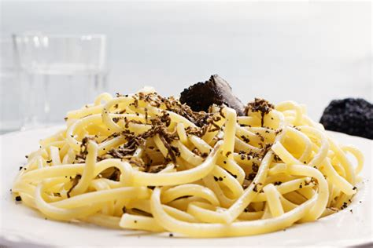
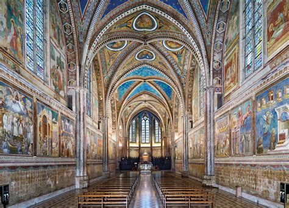
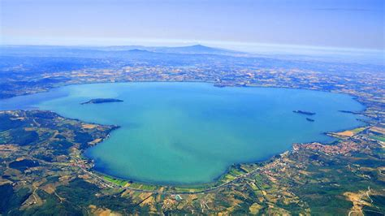
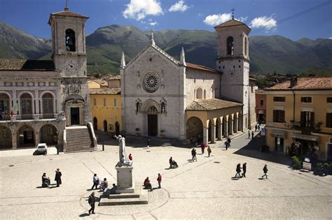
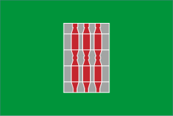

Umbria
Panoramica
Umbria è una regione dell’Italia centrale, senza sbocchi sul mare, nota per i suoi paesaggi verdi, le città medievali e la ricca storia religiosa. È spesso chiamata il “cuore verde d’Italia”. Assisi, Perugia e Spoleto sono tra le sue città più famose.
Fatti in Breve
- Capoluogo: Perugia
- Lingua: Italiano
- Popolazione: Circa 880.000
- Famosa per: Paesaggi collinari, borghi medievali, tartufi
- Curiosità: È l’unica regione dell’Italia centrale senza accesso al mare!
Piatti Tipici
Torta al testo

Strangozzi al tartufo

Porchetta umbra
Lenticchie di Castelluccio

Luoghi Famosi
Basilica di San Francesco

Lago Trasimeno

Cascata delle Marmore

Duomo di Orvieto

Norcia

Quando Visitare
La primavera e l’autunno sono ideali per visitare Umbria grazie al clima mite e ai festival locali. L’estate è perfetta per eventi culturali, mentre l’inverno è tranquillo e suggestivo.
Simboli Regionali
- Bandiera: 
- Stemma: